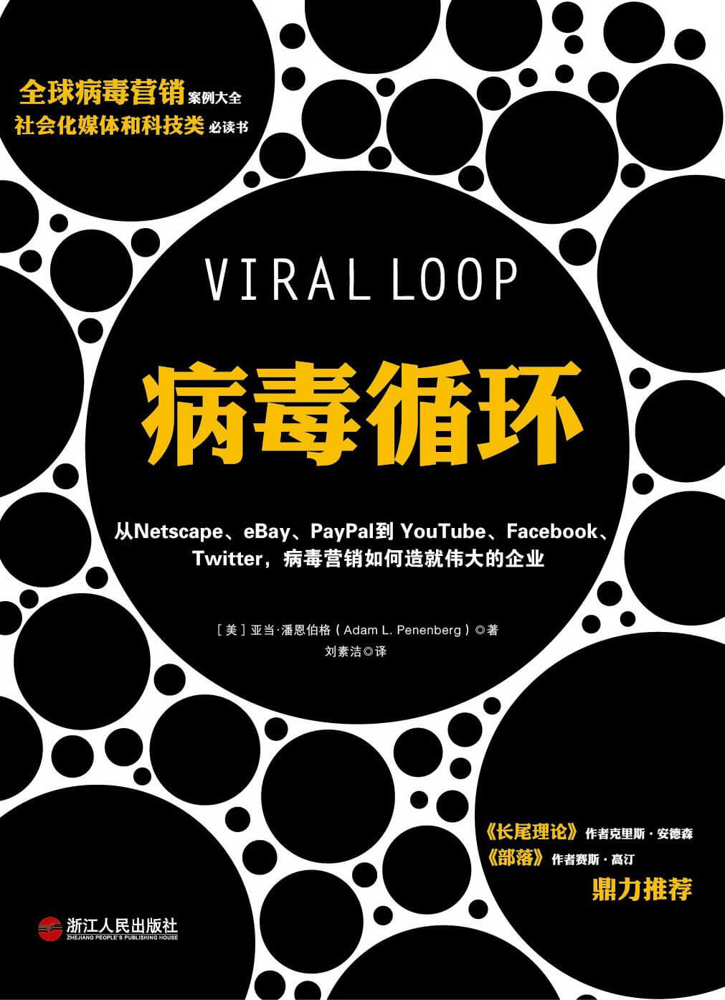

注：【】部分为笔者心得，非原文摘抄。
- 一个网站如果能在两秒内抓住访客的兴趣，它就有机会变得炙手可热，被口口相传的赞誉传播得更远。
- 解决好缩放问题才是生存之道。
- 【风投无圣人，搭讪需谨慎。】
- 所谓“病毒循环”，是指将产品的病毒性与功能性相结合。简单说来，是指公司依靠用户吸引用户来实现增长。
- 除非产品真的很好，不然很难拥有很强的病毒系数。
- 如果你打造出的是人们真正喜欢的产品，用户便会自发地帮助你的公司成长。
- 【有效的广告是给用户一个恰好满足需要又印象深刻的展示。】
- 购买欲是有传播性的。
- 贪欲是传播信息的有效动力。
- 凡需要对消费者进行使用教育的产品便是最适合面对面直接销售的产品。
- 如果能够找到一个在绝大多数用户身上赚小钱的方法，就能获得巨大的利润。
- 今天的市场份额等于明天的利润。没有了市场份额，就不会有利润。
- 只有拥有了令人敬畏的产业规模，成功才会接踵而来。
- 当病毒系数（新成员带来的用户人数）为 1 时，网络基本人数将会出现线性增长，并最终出现停涨。但当这一系数高于 1 时，网络用户的人数则会以指数方式增长。
- 别人恐惧时你该贪婪，别人贪婪时你该恐惧。——沃伦·巴菲特
- 病毒式网络的覆盖面越大，其扩张速度也就越快。
- 网络效应：网络本身的价值与其链接数量、节点数量和用户数量成正比。
- 拥有大量用户就意味着拥有了巨大的潜在价值。
- 成功的病毒循环公司通常都有以下共性：
- 以网络为基础；
- 免费；
- 组织性技术：用户创造内容，它们只是将这些内容组织起来；
- 概念简单；
- 本身具有传播性；
- 能迅速为用户采用；
- 指数型增长；
- 病毒系数；
- 可预测的增长率；
- 网络效应：网络中用户越多，希望加入这一网络的人数也就越多；
- 堆叠：病毒式网络之间可以互相叠加，每一个网络都能够催生另一个网络的成长；
- 不可取代点：一旦公司用户数量突破这一临界点并继续保持增长，则很难会被其它竞争对手打败并取代；
- 最终饱和度：当一个网络传播的广度和深度都实现了饱和后，它便成长为一个成熟的网络，增长速度也将放缓。
- 当流通的内容变成了人们的想法时，用户自然会对这样的平台产生难以割舍的感情。
- 我们不仅是与众不同的个体，更无时无刻不在努力突破自己与他人的区别。然而我们所有的与众不同之处却又倾向于与其他同样脱颖而出的个体寻求相同的共性。没有任何完全无差别的相似，也没有任何完全脱离共识而存在的差异。——Hannah Arendt
- 人们逐渐分离出三种自我形象：展示在整个物质世界前的公众自我、个人自我（独自一人时的状态）以及数码自我。而后者在传播范围上远远大于前两者。
- 除了对社会交往和传播信息的需求外，人类还有一种对动态图片与生俱来的痴迷。
- 新的互联网经济并不像网络泡沫破灭之前那样只注重吸引客户的眼球，它更看重用户的属性、网站对客户的分类以及引导方式。
- 人们相互之间的连接性越强，信息大规模扩散所带来的危害就越大。
- 一个人就算再有钱，不会砍价也不算有本事。
- 如果明知道用户数量就是决定整场生意的关键所在，就应该竭尽全力以最快速度实现用户人数的增长。
- 客户的拥戴是打造成功消费品牌的基础。
- 有一支由用户组成的庞大军队，这种影响必将带来免费的、可以自我实现的宣传效应。
- 一个忠心耿耿、亲密无间、积极主动的粉丝群比任何个人更能说明一款产品的品质，发自“网络精神”的赞扬是能改变一生的力量。
- 资本，或者说资本过剩，是实现繁荣的关键所在。
- 能迅速在互联网上广为流传的除了恶作剧病毒邮件外，还有各种玩笑、名言、虚假健康警报、诡异的阴谋论、感人肺腑的文章、各种笑料以及它们的综合体，这些都是病毒平原上常见的信息。
- 最差经的做法莫过于摆出一副性格乖戾的老品牌模样，并写信给对方要求停止行为，否则对簿公堂。
- 没有大规模扩张的时候就为系统做大规模扩展的准备是没有任何意义的。
- 哪里有贸易，哪里就会有城市的兴起。
- 对于一家正在成长中的电子商务企业而言，一个稳定的基础结构必须拥有灵活性、扩展性以及稳定性三种特点。
- 对于任何一家互联网公司而言，永不掉线是最重要的准则。
- 决定成长结果的关键不在于初始用户人数，而在于其传播的速度。
- 人类都有易受人摆布的本质，喜欢在不加思考的情况下借鉴他人的欲望。
- 交易的对称性是一个判断交易是否存在欺诈的绝佳手段。
- 网络的高速发展并非得益于台式机的普及，移动设备才是增长速度最快的宽带项目，并在很大程度上扩展了病毒式传播平原的面积及其涉及范围。
- 最杰出的思想总是能获得最崇高的地位。
- 没有社区用户，就没有病毒式网络。
- 一旦病毒式网络的演变成一个病毒循环、达到了无法替代的位置，就不会再有任何人能够阻挡它前进的脚步。
- 把东西弄得越简单，网站的病毒系数也就越高。
- 任何需要人们思考的事物似乎都会使他们望而却步。
- 相比利用复杂的算法查找出一批效果最好的广告，不如让用户自己选择愿意接收的广告。
- 网站扩展的速度越快，需要投入的资源也就越多，这势必要求在网站飞速发展的同时打造出新的基本结构。
- 谁定标准谁就赢。
- 人们只看到自己想看的东西，这是一种选择性视觉，是一种感官超负荷时过滤信息的方式。
- “承诺”是建立客户与商品之间联系的重要因素。
- 随着整个世界连通性的增加，我们的包容度也在呈指数增长——所有人都有被泄密的危险，假装自己比别人清高其实是白费力气。